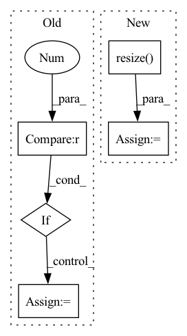

Pattern ID :14954
Before Change
if tf.reduce_max(image) < 2:
image *= 255
image = tf.image.resize(image, input_shape, method=resize_method, antialias=resize_antialias)
if len(image.shape) == 3 :
image = tf.expand_dims(image, 0)
if self.rescale_mode == "raw":
return imageAfter Change
if input_shape is not None:
self.set_input_shape(input_shape)
images = [image] if len(np.shape(image)) == 3 else image
images = [np.array(Image.fromarray(image).resize( self.input_shape) ) for image in images]
images = (np.stack(images) - self.mean) / self.std
images = images if backend.image_data_format() == "channels_last" else images.transpose([0, 3, 1, 2])
return functional.convert_to_tensor(images)In pattern: SUPERPATTERN
Frequency: 3
Non-data size: 5
Instances Fragment ID: 49814872
Project Name: leondgarse/keras_cv_attention_models
Commit Name: 2f70b0d51c8f2b1f8664f32dc75ecc1001758946
Time: 2023-01-29
Author: leondgarse@gmail.com
File Name: keras_cv_attention_models/common_layers.py
M Class Name: PreprocessInput
N Class Name: PreprocessInput
M Method Name: __call__(5)
N Method Name: __call__(5)
M Parent Class:
N Parent Class:
M File Name: keras_cv_attention_models/common_layers.py
N File Name: keras_cv_attention_models/common_layers.py
M Start Line: 586
M End Line: 601
N Start Line: 609
N End Line: 616
Before Change
crop_shape = [br[1] - ul[1], br[0] - ul[0]]
new_shape = [br[1] - ul[1], br[0] - ul[0]]
if len(img.shape) > 2 :
new_shape += [img.shape[2]]
new_img = np.zeros(orig_shape, dtype=np.uint8)
// Range to fill new array
new_x = max(0, -ul[0]), min(br[0], orig_shape[1]) - ul[0]After Change
old_x = max(0, ul[0]), min(orig_shape[1], br[0])
old_y = max(0, ul[1]), min(orig_shape[0], br[1])
img = np.array(Image.fromarray(img.astype(np.uint8)).resize( crop_shape) )
new_img[old_y[0]:old_y[1], old_x[0]:old_x[1]] = img[new_y[0]:new_y[1], new_x[0]:new_x[1]]
Fragment ID: 49814874
Project Name: yuliangxiu/icon
Commit Name: 0198e25265de836a9b0c79b017afa7fb5edcb56a
Time: 2022-02-13
Author: yuliang.xiu@tuebingen.mpg.de
File Name: lib/pymaf/utils/imutils.py
M Class Name: AnonimousClass
N Class Name: AnonimousClass
M Method Name: uncrop(4)
N Method Name: uncrop(6)
M Parent Class:
N Parent Class:
M File Name: lib/pymaf/utils/imutils.py
N File Name: lib/pymaf/utils/imutils.py
M Start Line: 239
M End Line: 262
N Start Line: 201
N End Line: 212
Before Change
def load_image(img_path, height=None):
img = sio.imread(img_path).astype(np.float32)
if img.shape[2] == 4 : // remove alpha channel
img = img[:, :, :3]
img /= 255.0 // get to [0, 1] range
if height is not None and height != -1:
ratio = height / img.shape[0]After Change
width = int(img.shape[1] * ratio)
img = cv.resize(img, (width, target_shape), interpolation=cv.INTER_CUBIC)
else: // set both dimensions to target shape
img = cv.resize( img, (target_shape[1], target_shape[0]), interpolation=cv.INTER_CUBIC)
return img
def prepare_img(img_path, target_shape, device): Fragment ID: 49814875
Project Name: gordicaleksa/pytorch-neural-style-transfer
Commit Name: 4cf22249924545b342fa9d90fb3201ba2cb00b95
Time: 2020-03-31
Author: gordicaleksa@gmail.com
File Name: utils/utils.py
M Class Name: AnonimousClass
N Class Name: AnonimousClass
M Method Name: load_image(2)
N Method Name: load_image(2)
M Parent Class:
N Parent Class:
M File Name: utils/utils.py
N File Name: utils/utils.py
M Start Line: 19
M End Line: 27
N Start Line: 17
N End Line: 28